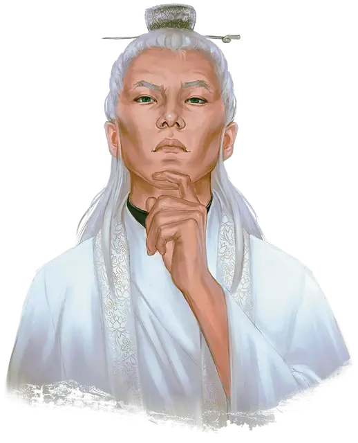

Стальной Журавль
Steel Crane
Средний Гуманоид (Человек), законно-злой, именной НИП

Класс Доспеха 17 (защита без доспехов)
Хиты 76 (9к8 + 36)
Скорость 40 футов
| мод | спас | ||
|---|---|---|---|
| СИЛ | 13 | +1 | +1 |
| ЛОВ | 18 | +4 | +7 |
| ТЕЛ | 18 | +4 | +4 |
| мод | спас | ||
|---|---|---|---|
| ИНТ | 13 | +1 | +4 |
| МДР | 17 | +3 | +3 |
| ХАР | 14 | +2 | +2 |
Навыки Акробатика +7, Восприятие +6, Обман +5, Скрытность +7
Сопротивление урону психическая энергия, яд
Чувства пассивное Восприятие 16
Языки Общий
Опасность 8 (3900 опыта)
Бонус мастерства +3
Особенности
Защита без доспехов. Пока Стальной журавль не носит ни доспехи, ни щит, к КД прибавляется его модификатор Мудрости.
Черта характера. "Техника Бессмертного Лотоса прекрасна и могущественна. Я стану преемником мастера Бак Мэя."
Идеал. "Древние традиции и тайные боевые искусства должны быть сохранены и изучены. Пряча их в библиотеках, мы позорим наших учителей."
Привязанность. "Бессмертный Лотос - моя новая семья. Бак Мэй приведет меня к светлому будущему."
Слабость. "Монахам моего старого храма известен мой позор. Я никогда не смогу вернуться."
Действия
Мультиатака. Стальной журавль совершает три атаки.
Удар силовым полем. Рукопашная атака оружием: +7 к попаданию, досягаемость 5 фт., одна цель. Попадание: 8 (1к8 + 4) урона силовым полем, и если целью является существо, оно должно преуспеть в спасброске Телосложения Сл 15, иначе становится ошеломлённой до начала следующего хода Стального журавля.
Кнут. Рукопашная атака оружием: +7 к попаданию, досягаемость 10 фт., одна цель. Попадание: 6 (1к4 + 4) рубящего урона или если целью является существо, то Стальной журавль делает цель схваченной (Сл высвобождения 15). Стальной журавль не может атаковать кнутом если он использован для захвата цели-существа. В любой момент в свой ход он может освободить схваченное хлыстом существо (никаких действий не требуется).
Самолечение (перезарядка после продолжительного отдыха). Стальной журавль восстанавливает 2к8 + 4 хита и снимает все степени истощения.
Реакции
Отражение снарядов. Стальной журавль может реакцией поймать снаряд, если по нему попали дальнобойной атакой оружием. Урон от этой атаки уменьшается на 1к10 + 10. Если урон уменьшился до 0, Стальной журавль ловит снаряд, если тот достаточно мал, чтобы держать его одной рукой, и у Стального журавля есть свободная рука.
Медленное падение (3/день). При падении Стальной журавль может замедлить его нгастолько, что не получит никакого урона при приземлении.
Описание
Стальной Журавль - держащийся с грацией танцора высокий и стройный необыкновенно симпатичный человек, с аккуратными серебристыми волосами и темно-зелеными глазами.
Во время налета на Крепость Свечей с левого рукава белой рясы Стального Журавля оторвался лоскут ткани, и Стальной Журавль до сих пор не удосужился озаботится его починкой. Хорошо заметное повреждение его рясы - свидетельство причастия Стального Журавля к краже.